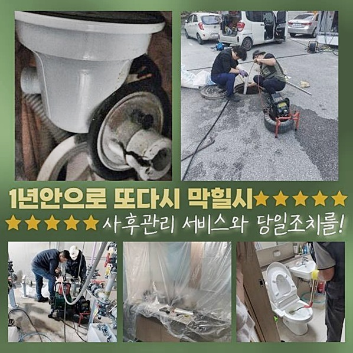
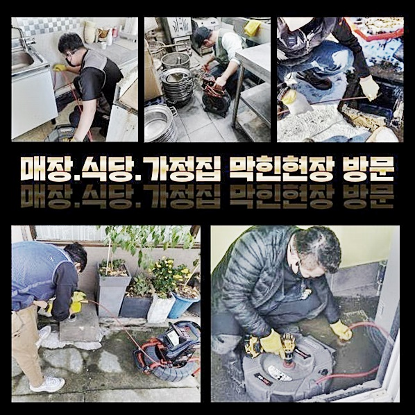
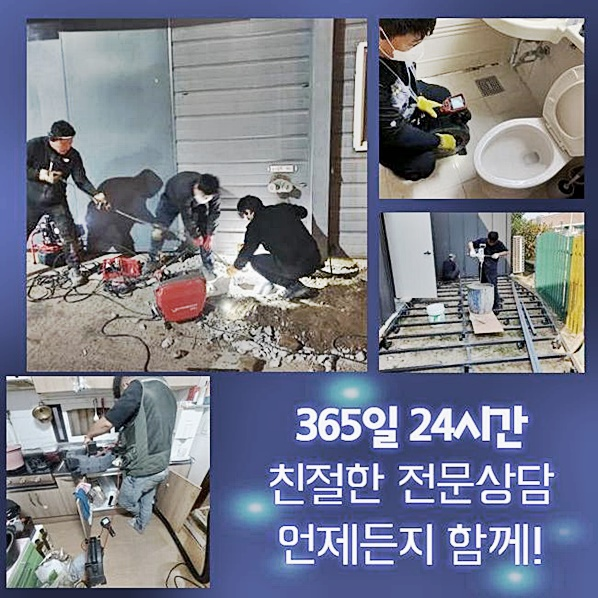
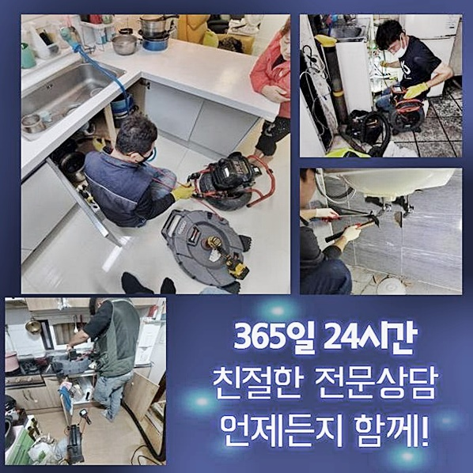
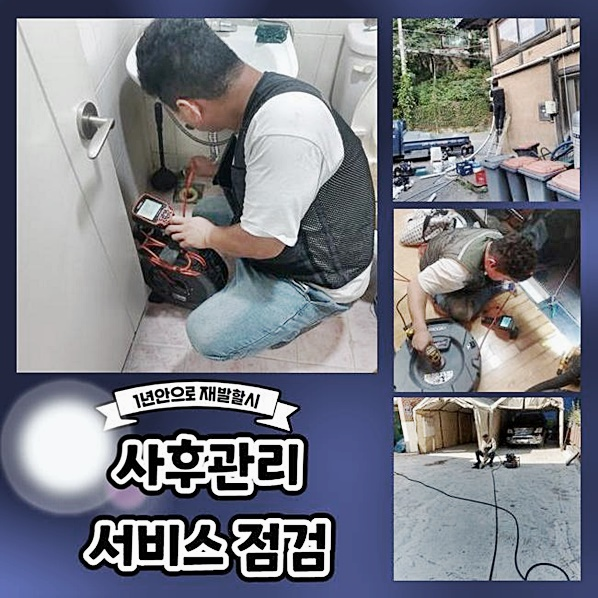
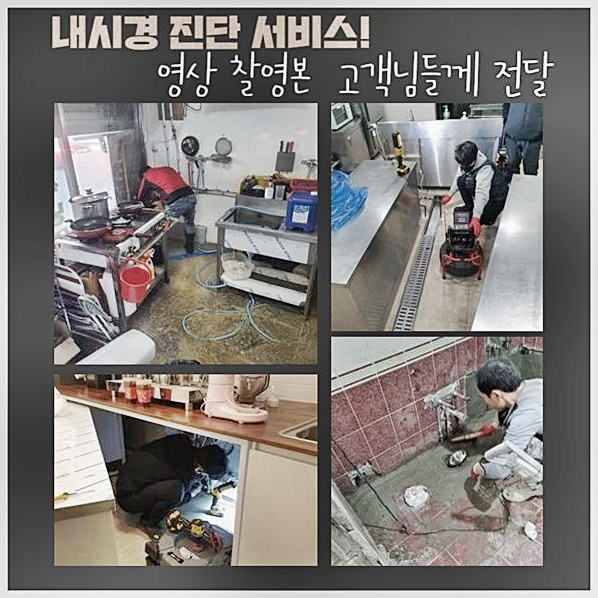
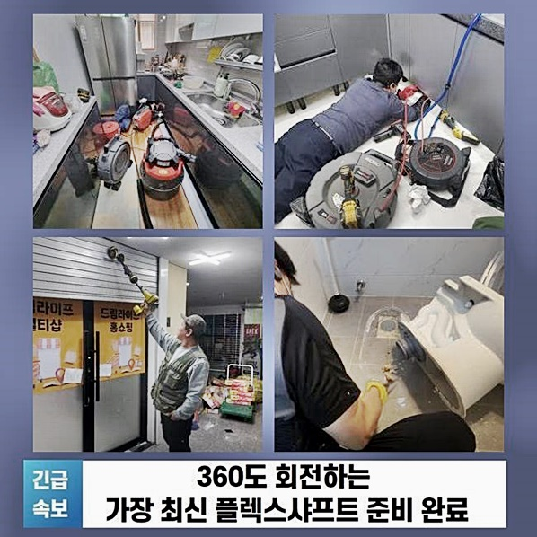

🏠 성남 상대원동하수도막힘 은행동 배관뚫기 누수탐지
성남 원동 하수구막힘 전문 시공 후기

📋 작업 개요
- 위치: 성남 원동, 원동, 성남
- 서비스 유형: 하수구막힘, 배관막힘, 누수수리, 역류해결, 뚫는업체, 배관청소, 설비공사, 악취차단
- 작업 일시: 2024. 10. 2. 18:38
- 업체명: 하수구수사대 (010-5615-2118)
🔍 문제 상황
성남 상대원동하수도막힘 은행동 배관뚫기 누수탐지
물을 사용할 때 배수관에 여러가지 원인으로 석회질이 축적될 수 있어요
이런 석회입자는 일단 생기게되면 암석처럼 단단하게 굳어져 혼자힘으로 없애기 까다로운 상황들이 종종 나타납니다
하수도 내부에 굳어있는 불순물을 과도하게 없애려다가는 배수구가 파손될 수도 있기 때문에 명확하게 드러나는 상태이더라도 고급 기기와 약제를 투입하여
화장실 하수관 막힘은 어떤 방법으로 리스크없이 해소할 수 있을까요 저희 배관 막힘을 다년간 해결해 온 우리 팀이 이번 작업장에서 막힌 배수구를 완벽하게 뚫어낸 모습을 확인시켜드릴게요
아침시간에 작업 의뢰를 주신 분은 공동 주택에 사시는 고객인데 화장실 배수 곤란으로 전화를 주셨어요
저희팀은 특수 장치를 준비하여 신속히 찾아뵈었습니다
작업지를 보니 샤워부스 바닥 배수구에서 생활용수가 더디게 흘러나가고 있었습니다
고객님은 물을 쓰면 적어도 30분 가량 지켜봐야 배수가 이뤄진다며 불편감을 표현하셨습니다
가정에서 세제를 이용해 배수로 막힘을 해결했지만 이틀 남짓만 잠시 좋아지고 실질적으로 욕실 배수구 냄새 원인은 해소되지 않았다고 강조하셨어요

🔎 원인 분석
💡 전문가 진단: 정밀 진단 장비를 사용하여 슬러지의 고착 여부를 판명하고 타격/세척 작업을 실시했습니다.
시간이 갈수록 막힘 주기가 단축되고 화장실 하수관 역한 냄새가 나는등 다방면으로 불편들이 발생한 상황으로 이번엔 전문기사를 통해 배수구 악취도 동시에 제거하기로 선택하셨어요
첫번째로 석션장치를 활용해 흐르지 않는 하수와 오염물질을 제거한 다음 배수구 속으로 배관용 내시경 카메라장비를 들여보내니 흰 무언가가 목격되었습니다
이 물체는 석회 덩어리로 물에 닿으면 더욱 견고하게 굳어져 하수관에 붙어버리면 없애기 어려워져요
여러분 역시 지면이나 벽에 들러붙은 시멘트 흔적을 물과 세정액으로 열심히 제거해도 완벽하게 복원하기 힘들었던 경험이 있으실거예요 하수관도 역시 무력으로 없애려다가는 하수도 원형이 파손될 가능성이 있어요
그래서 석회물질을 말랑하게 녹여 제거하는 특수 약품을 활용하는 것이 핵심입니다
의뢰인께 석회성 물질로 배수관이 막혔음을 설명하고 나서 석회입자를 녹여 제거하는 전문 약품들을 하수도에 충분하게 흘려주고 30분 남짓 대기하였습니다
이런식으로 고체화 된 석회가 나타났을 때는 무모하게 설비를 동원하기 보단 서서히 녹인 다음 처리하는 것이 올바른 방법입니다
석회성분을 풀어주는 약제를 흘려보낸 후 약간 기다리다 보면 거품이 떠오르는데 그때 따뜻한 물을 넉넉히 흘려준 후 헹궈내면 중화되면서 뭉쳐있던 석회질이 부드럽게 바뀝니다
이 약제들은 아무데서나 구입할 수 없기에 하수관이 단단히 막힌 상태거나 석회파편이 관찰되면 특화된 방법으로 개선하는 수리기사에게 맡기는 편이 올바른 방법입니다
욕실공간은 타일 타일 사이 줄눈을 메우는 접착제품이나 셀프 방수 공사시에 이용한 방수몰탈의 재료가 흘러가 석회 성분 덩이가 생기게 됩니다
화장실 배수구 악취가 퍼질 땐 즉각 전문기술자에게 상담해야 커지는 손해를 예방할 수 있어요

🔧 작업 과정
화장실 하수관 막힘 냄새가 퍼질 때 의뢰자도 이전까지 세제를 여러 개 이용해도 배수구 막힘이 처리되지 않은 원인을 드디어 깨달았다고 말했습니다
배관이 막히는 이유는 갖가지이기 때문에 하수도 전용 내시경 기구를 투입하여 세심하게 막힌 곳을 파악해나가지 않으면 올바른 수리가 힘듭니다
저희 배수로를 복원하는 전문기술자가 충분히 물을 배출한 다음 또 다시 배관 속을 확인해보니 석회 성분 조각과 모발이 한데 꼬여 견고한 이물질로 배수를 차단한 상태였어요
배수구 덮개가 세밀하지 않아 찌꺼기가 수로를 따라 떨어졌던 것으로 생각되었습니다
엄청난 전문가라 한다고 해도 육안으로 배수관 안의 상태를 분명하게 파악하기란 어려운 일입니다
그래서 우선 내시경 카메라 장비를 동원하여 배수관 내부 상황을 파악하는 것이 핵심입니다
플렉스 샤프트기기 동작시에도 하수도 안쪽 상황을 꾸준히 체크하기 위해 내시경 카메라 장비를 넣어 놓은 채로 막힘해결 시공을 시행해야 합니다
하수관 중앙에 끼어있던 모발 및 석회성 입자를 분해하며 없앤후에 또 다시 배관 속을 면밀히 살펴본결과 별도의 불순물이나 슬러지 뭉텅이는 관찰되지 않았습니다
그로인해 별도의 제거 과정이 필요가 없다고 판단되었습니다
배관 해결이 완벽히 실행되었는지 재차 정밀하게 점검해드렸습니다
뚫는 작업을 바라보던 고객이 알고싶어했던 부분들에 관해서 설명하고 일상에서 배수관 케어를 어떻게 해야 효율적인지에 대한 정보도 상세히 설명했어요
화장실 하수도나 설거지대 하수도가 배수되지 않는것은 짧은기간동안 생기는 문제라기보다는 장기적으로 오염물과 유분이 쌓여가면서 서서히 거대해지며 고착되기 때문이에요
그러므로 일정한 날짜에 따뜻한 물을 흘려보내거나 불순물들이 유입되지 않게 유지하는 것이 도움이 됩니다
하수배관 청소를 전부 마친 뒤에 내시경 카메라 기기를 넣어 놓은 채 안쪽 상황을 살펴보기 위해 물 흐름 테스트를 수행했어요
시작과는 달리 배관 내의 물이 말끔하게 잘 흐르는 모습이 나타났어요
하수구 마개 부분에도 수도를 열어 혹시나 역류는 일어나는건 아닌지 확인해보았는데 결함 하나 없는 형태로 모든 단계를 끝낼 수 있었어요


✅ 작업 완료
샤프트장치로 오염물질을 갈아낸 후 흡입기구로 남겨진 불순물들을 빨아내어 청소하면서 고객님 세대의 배수로에서 나온 찌꺼기들을 석션기 내부에서 검사해봤습니다
머리카락 뭉텅이와 여러 크기의 석회질 조각 다대수가 흡입되었고 이것을 따로 처리한 뒤 후 처리까지 완벽하게 끝낸 뒤 모든 작업을 완료했습니다
보통 가정이나 대형 상가 건물 어디서든 물을 이용하는 시설이라면 이 같은 하수관 막힘 현상 때문에 불편감을 겪게 될 수 있습니다
이런 상황을 겪는 분은 전문기술자에게 의뢰를 하는 것이 유리합니다
납득가능한 가격으로 빠르게 현장에 알맞은 시공을 제공할 수 있으니 해결이 필요한 분들은 어느때든 저희 배수관 막힘을 책임지는 전문 수리공에게 연락해주세요




⚠️ 베란다 누수 및 방수 관리 방법
- ✅ 비가 많이 올 때 창틀 주변이나 아래층 천장에 얼룩이 생기는지 정기적으로 확인해 보세요.
- ✅ 우수관 주변 실리콘 마감이 들뜨거나 깨진 틈새가 있는지 손상 여부를 수시로 체크하세요.
- ✅ 베란다 바닥 타일의 줄눈(메지)이 소실되면 그 틈으로 물이 침투하여 누수가 유발됩니다.
- ✅ 누수 의심 증상 발견 시 방치하면 아래층 손실이 커지므로 즉시 전문가의 진단을 받으십시오.
💡 핵심 정리
- 확실한 장비 작업(내시경 점검 및 샤프트 스케일링)으로 원인을 뿌리 뽑습니다.
- 작업 후 1년 이내에 동일한 부위 재발 시 100% 무상 A/S 서비스를 보장합니다.
- 서울 · 경기 · 인천 전 지역에 24시간 언제든 긴급 출동할 수 있도록 항시 대기 중입니다.
❓ 자주 묻는 질문 (FAQ)
🚨 성남 원동 하수구막힘 문제로 고민이신가요?
정확한 원인 진단과 확실한 시공으로 재발 없는 해결을 약속드립니다.
24시간 긴급 출동 | 서울 · 경기 · 인천 전지역 | 1년 내 재발 시 무상 A/S